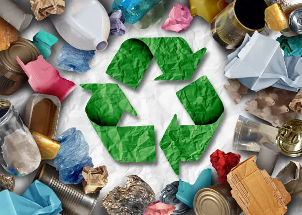
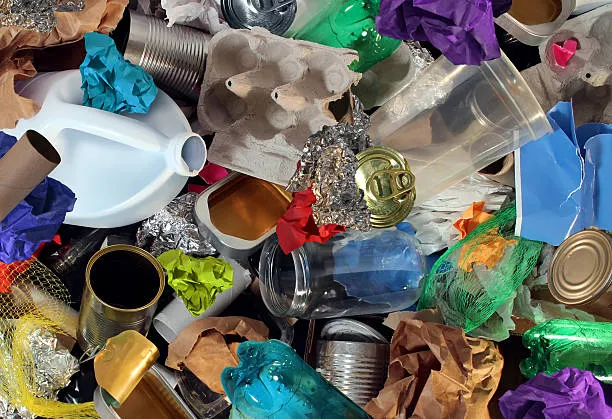
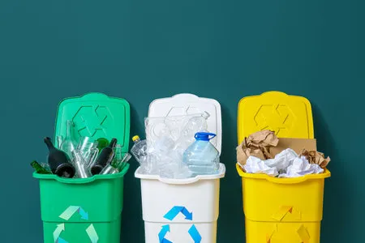
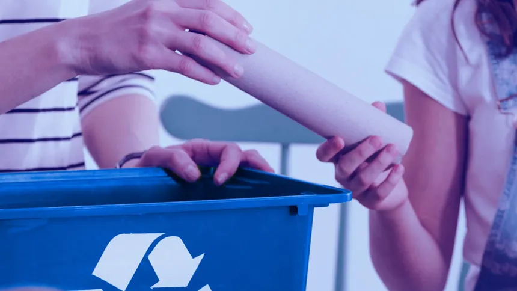

El proyecto inicia con la detección de una problemática ambiental dentro y fuera del plantel. Se observa un exceso de basura en la escuela por el uso frecuente de desechables en cafeterías y comedores escolares.
También se identifica la acumulación de residuos en espacios comunitarios, como el bosque donde se realizan fiestas patronales, así como en calles, barrancas, aulas y otras áreas cercanas a la comunidad escolar.
Esta etapa permite reconocer que el problema no solo afecta a la escuela, sino también al entorno social y natural que rodea al plantel.


Después de identificar el problema, se analiza el contexto del CBTIS 153 y de la comunidad de San Pablo del Monte, Tlaxcala. El plantel cuenta con una población amplia y con distintas especialidades, lo que favorece el trabajo colaborativo.
Al mismo tiempo, la comunidad presenta una identidad cultural fuerte, con tradiciones, artesanía, gastronomía y raíces indígenas, por lo que el proyecto se entiende como una acción escolar vinculada también al bienestar comunitario.
A partir de este análisis se detectan necesidades concretas: crear un centro de acopio escolar, contar con contenedores adecuados y promover alternativas reutilizables para disminuir el uso de desechables.
Una vez reconocido el problema y las necesidades, se formula el objetivo principal del proyecto: implementar un centro de acopio escolar que fomente el reciclaje responsable, reduzca el uso de desechables y fortalezca la conciencia ambiental.
Esta etapa orienta todas las acciones posteriores, ya que establece con claridad lo que se busca lograr dentro de la institución y el impacto que se espera generar.
El proyecto recibe el nombre de “Centro de Acopio Escolar: Educación sin desechables”, lo cual resume su propósito educativo y ambiental.


En esta fase se explica por qué el proyecto es importante. Se considera una oportunidad educativa para formar valores de responsabilidad, respeto ambiental y compromiso comunitario.
Además, se entiende como una acción concreta para mejorar las condiciones ecológicas del plantel y responder al problema del exceso de residuos.
También se destaca que el proyecto está alineado con los principios de ética, sustentabilidad y comunidad promovidos por la Nueva Escuela Mexicana.
Después de justificar el proyecto, se organiza un plan operativo para llevarlo a cabo. En esta fase se distribuyen actividades a lo largo del ciclo escolar y se definen acciones para que distintas asignaturas participen en el fortalecimiento del centro de acopio.
La planeación incluye tareas relacionadas con tecnología, registro de materiales, análisis de datos, difusión del proyecto, producción de recursos audiovisuales y reflexión académica.
Más que ver la tabla como un listado aislado, esta etapa representa la organización concreta del trabajo para que el proyecto funcione de manera ordenada durante el primer y segundo semestre.
El proyecto avanza mediante la participación de varias asignaturas y especialidades, lo que permite una integración académica transversal.
Esto significa que el centro de acopio escolar no se trabaja como una actividad separada, sino como una experiencia de aprendizaje que involucra diferentes conocimientos y habilidades.
Gracias a esta integración, el alumnado puede desarrollar competencias tecnológicas, matemáticas, comunicativas, históricas y socioemocionales a partir de una problemática real.
Una parte importante del proceso es el seguimiento del proyecto. Para ello se utilizan instrumentos de evaluación comunes y evidencias que permiten valorar la participación y los resultados obtenidos.
En esta fase se consideran evidencias del trabajo, resultados cuantitativos, resultados cualitativos y procesos de autoevaluación.
La evaluación permite reconocer avances, áreas de mejora y el impacto real que el proyecto va generando en la comunidad escolar.
Finalmente, el proyecto se presenta como un espacio formativo que impulsa la conciencia ambiental y la participación comunitaria a través de la separación responsable de residuos y la reducción del uso de desechables.
Esta etapa resume el impacto educativo, ambiental y comunitario del proyecto, mostrando que la experiencia no solo busca recoger materiales, sino transformar hábitos y fortalecer la corresponsabilidad entre estudiantes, docentes y directivos.
Como cierre, se plantea una pregunta de reflexión sobre si la adopción de prácticas similares en todas las escuelas del país podría ayudar a reducir significativamente la contaminación.